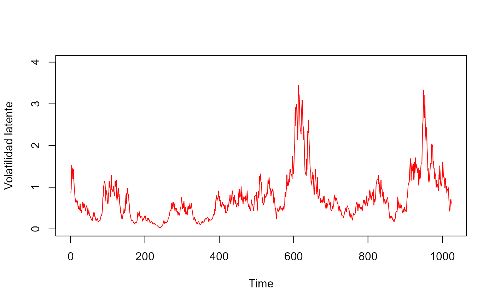
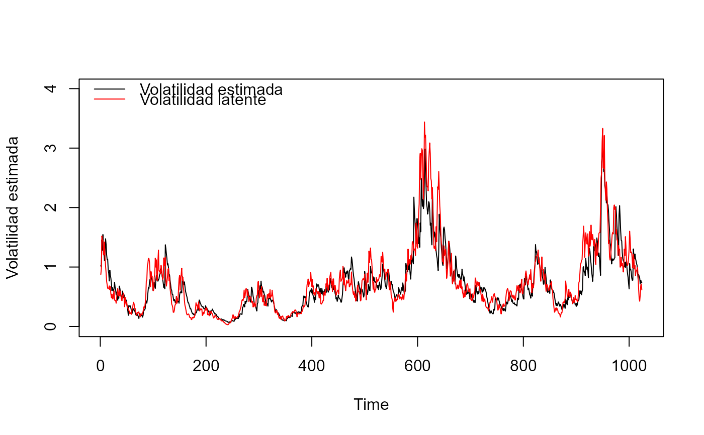
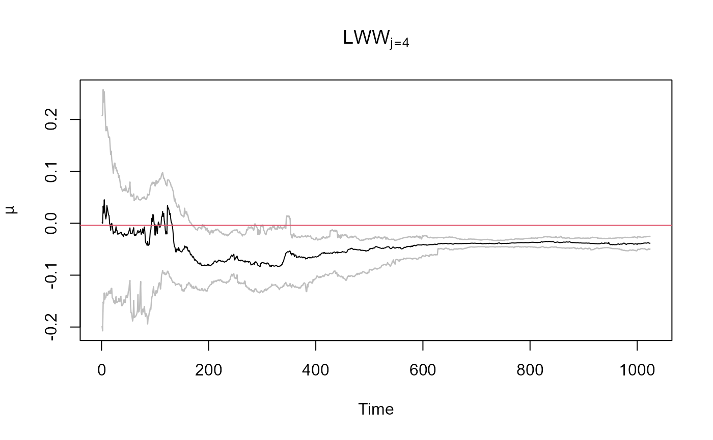
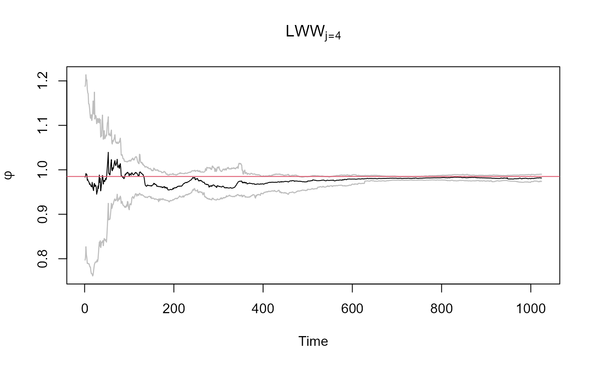
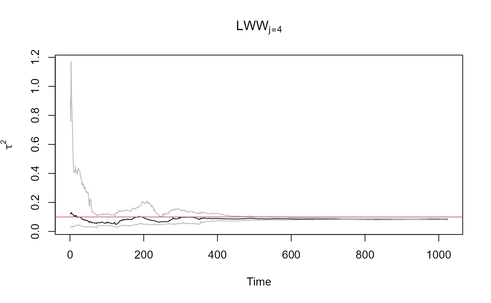

LWW.RdEsta funcion calcula el modelo de volatilidad estocástica basada en el filtro de partículas de Liu & West (2001) el algoritmo incorpora los pasos de empuje bayesianos basados en la transformación wavelet. bayeShrinkPL, metodología propuesta para la eliminación de ruido aditivo basado en particle learning en la transformación wavelet. BAYES.THR, metodología de Abramovich et al. (1998) para la eliminación de ruido aditivo basado en la transformación wavelet.
LWW(y, alphas, betas, tau2s, xs, delta, lev, M = 5, Ne = 5, method = 1)representa la serie de observaciones reales.
representa los valores iniciales para el parámetro de reversión de la media en el proceso de volatilidad estocástica.
representa los valores iniciales para el parámetros de persistencia de volatilidad.
representa los valores iniciales para la varianza de la variable latente (volatilidad estocástica).
partículas iniciales de la variable latente a partir de la distribución a priori.
constante de ponderación para el aprendizaje de parámetros en el algoritmo Liu & West (2001).
nivel de resolución en la transformación wavelet.
parámetro de la función bayeShrinkPL.
parámetro de la función bayeShrinkPL.
1 o 2, método de eliminación de ruido a partir de la transformación wavelet method = 1 (bayeShrinkPL), method = 2 (BAYES.THR).
Esta funcion retorna los cuantiles (2.5%, 50% y 97.5%) de las estimaciones de la volatilidad estocástica, y sus parámetros (\(\alpha\), \(\beta\) y \(\tau^2\)) a partir de las partículas libre de ruido.
# Ejemplo de aplicación del filtro de Liu West con empuje basado en wavelet
library(wavethresh)
rlike <- function(x){rnorm(1,0,exp(x/2))}
n = 2^10
alpha = -0.004
beta = 0.985
tau2 = 0.1
tau = sqrt(tau2)
y1 = rep(0,n)
x1 = rep(0,n)
x1[1] = alpha/(1-beta)
y1[1] = rlike(x1[1])
set.seed(116)
for (t in 2:n){
x1[t] = rnorm(1,alpha+beta*x1[t-1],tau)
y1[t] = rlike(x1[t])
}
alpha.true <- alpha
beta.true <- beta
tau2.true <- tau2
# Número de partículas, ponderación de la mixtura y vector de niveles de resolución
N = 2^11
delta <- 0.99
lev <- 3:6
# Valores iniciales y distribuciones a priori
m0 <- 0.0; C0 <- 0.1; sC0 <- sqrt(C0)
ealpha <- alpha; valpha <- 0.01
ephi <- beta; vphi <- 0.01
nu <- 4; lambda <- tau2
xs <- rnorm(N, m0, sC0)
alphas <- rnorm(N, ealpha, sqrt(valpha))
betas <- rnorm(N, ephi, sqrt(vphi))
tau2s <- 1/rgamma(N, nu/2, nu*lambda/2)
# Estimación de la volatilidad latente y parámetros
rest2 <- LWW(y1, alphas, betas, tau2s, xs, delta, lev[2], M = 2, method = 1)
mvolp2 <- rest2$quants[,4,1]
# Volatilidad latente y estimación
plot.ts(y1, ylab = 'Retornos')
plot.ts(exp(x1/2), ylim = c(-0.01,4), ylab = 'Volatilidad latente', col = 'red')

plot.ts(mvolp2, ylim = c(-0.01, 4), ylab = 'Volatilidad estimada')
lines(exp(x1/2),col = 'red')
legend('topleft', legend = c('Volatilidad estimada', 'Volatilidad latente'),
lty = 1, col = c('black', 'red'), bty = 'n')

# Parámetro de la media
malpha2 <- rest2$quants[,1,1]
lalpha2 <- rest2$quants[,1,2]
ualpha2 <- rest2$quants[,1,3]
ts.plot(malpha2, ylim = range(lalpha2, ualpha2), main = expression(LWW[j==4]), ylab=expression(mu))
lines(lalpha2, lwd = 1.25, col = 'gray')
lines(ualpha2, lwd = 1.25, col = 'gray')
abline(h = alpha.true, col = 2, lwd = 1)

# Parámetro de persistencia de la volatilidad
mbeta2 <- rest2$quants[,2,1]
lbeta2 <- rest2$quants[,2,2]
ubeta2 <- rest2$quants[,2,3]
ts.plot(mbeta2, ylim = range(lbeta2, ubeta2), main = expression(LWW[j==4]), ylab = expression(phi))
lines(lbeta2, lwd = 1.25, col = 'gray')
lines(ubeta2, lwd = 1.25, col = 'gray')
abline(h = beta.true, col = 2, lwd = 1)

# Parámetro de la varianza de la volatilidad latente
mtau22 <- rest2$quants[,3,1]
ltau22 <- rest2$quants[,3,2]
utau22 <- rest2$quants[,3,3]
ts.plot(mtau22, ylim = range(ltau22,utau22), main = expression(LWW[j==4]), ylab = expression(tau^2))
lines(ltau22, lwd = 1.25, col = 'gray')
lines(utau22, lwd = 1.25, col = 'gray')
abline(h = tau2.true, col = 2, lwd = 1)
